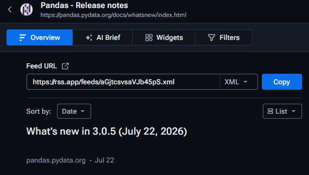
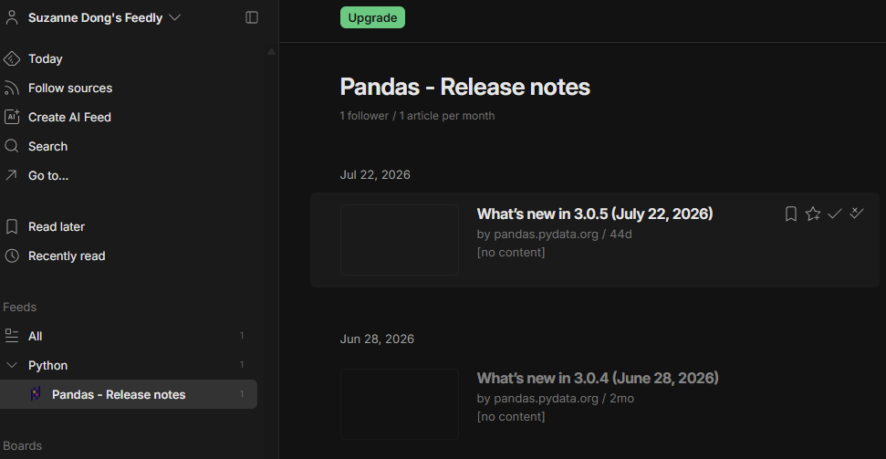

- 6outils d'analyse exploratoire évalués
- 2retenus : Pandas pour le diagnostic, Sweetviz pour la restitution
- 1flux de veille automatisé
01 Une veille pour un besoin réel
Cette veille répond à une question précise : comment rendre le diagnostic de qualité des données plus rapide, et lisible par des équipes qui ne sont pas techniques ?
Dans le projet BottleNeck, ce diagnostic (valeurs manquantes, doublons, valeurs aberrantes) était réalisé manuellement : long, exposé aux oublis, et réservé aux personnes sachant lire un notebook.
-
Partir du besoin
Le premier critère a été la lisibilité du résultat pour le commanditaire et le comité de direction, avant la performance.
-
Tester sur les données du projet
Chaque outil a été installé et essayé dans l'environnement du projet. Ces tests ont révélé des incompatibilités que la documentation ne signalait pas.
-
Juger sur des critères au-delà de la performance
Lisibilité pour les équipes métier, robustesse, reproductibilité, sécurité, sobriété et maintenabilité.
-
Automatiser le suivi
La page des nouveautés de Pandas n'ayant pas de flux RSS, elle a été convertie avec RSS.app puis centralisée dans Feedly. Le flux collecte les nouveautés sans notification : sa consultation reste une démarche active.


02 Veille métier : quel outil pour l'EDA ?
| Outil | Verdict | Ce qui a tranché |
|---|---|---|
| Sweetviz | Retenu | Un rapport HTML autonome, lisible et partageable par un non-technicien ; un fichier statique, exposé seulement si on le transmet |
| Pandas | Conservé | Un diagnostic local, reproductible et léger, mais une sortie qui reste technique à lire |
| Polars | Non retenu | Aucun gain de vitesse sur 825 et 1 513 lignes, et une sortie aussi technique que Pandas |
| D-Tale | Écarté | Un serveur accessible depuis les autres appareils du réseau pendant l'exécution : un risque dès que les données sont sensibles |
| AutoViz | Écarté | Des graphiques trop nombreux et peu pertinents, puis une incompatibilité après la mise à jour de Pandas |
| ydata-profiling | Non évaluable | Un conflit de dépendances empêche son exécution dans l'environnement du projet |
Deux outils complémentaires
Aucun outil ne couvrait seul les deux besoins. Pandas produit un diagnostic fiable et reproductible ; Sweetviz le rend lisible par ceux qui décident. Les outils ont donc été choisis d'abord selon leur usage.
03 Veille technologique : ce que change Pandas 3.0
Pandas est au cœur de toute préparation de données en Python. Sa version 3.0, publiée le 21 janvier 2026, modifie certains comportements lors de la mise à jour.
Trois évolutions touchent directement l'analyse exploratoire :
- Des copies plus sûres. Avec le Copy-on-Write, désormais généralisé, modifier un tableau n'altère plus par accident un autre tableau qui partageait ses données. Contrepartie : certaines écritures en chaîne des anciens scripts n'ont plus d'effet et doivent être revues.
-
Un vrai type pour le texte. Les colonnes de texte ne sont plus
stockées dans le type générique
object: les traitements qui s'appuyaient dessus sont à vérifier. - Des anti-jointures natives. Isoler en une seule opération ce qui n'a pas d'équivalent de l'autre côté : par exemple, les produits de l'ERP absents du site marchand.
Verdict pour le projet
Des évolutions utiles à moyen terme, mais un impact limité à court terme : elles changent des comportements existants : il faut vérifier la compatibilité avant de migrer. L'adoption se fera donc progressivement, en suivant les prochaines versions.
04 Enseignements de la veille
- Le besoin des utilisateurs passe avant la vitesse. Polars est plus rapide, mais n'aidait pas des lecteurs non techniques, et à ce volume de données la vitesse ne changeait rien.
- La sécurité doit être testée. L'exposition réseau de D-Tale n'apparaissait pas à la lecture ; un test l'a mise en évidence.
- La compatibilité est un critère à part entière. Deux outils sur six sont restés inutilisables à cause de leurs dépendances. Tester dans l'environnement réel évite d'adopter un outil qui casse au premier déploiement.
- Mettre à jour demande de faire des choix. Passer à la dernière version de Pandas a rendu AutoViz inutilisable : garder un environnement à jour comptait plus qu'un outil déjà jugé peu pertinent.
- L'automatisation a ses limites. Le flux de veille collecte les nouveautés, mais n'envoie pas d'alerte.
Limite : deux outils n'ayant pas pu être évalués jusqu'au bout, la comparaison reste partielle. ydata-profiling sera retesté une fois ses dépendances mises à jour.
05 Sources
Sources consultées en septembre 2026.
Outils d'analyse exploratoire
- Ibekwe, Kingsley. « 4 Tools for Automatic Exploratory Data Analysis (EDA) in Python », Medium, 13 avril 2022. Consulté le 11 septembre 2026.
- Tocilins-Ruberts, Antons. « EDA with Polars: Step-by-Step Guide for Pandas Users (Part 1) », Towards Data Science, 6 juillet 2023. Consulté le 13 septembre 2026.
- Patel, Shiv. « Visualizing Data Made Simple: A Walkthrough of AutoViz, Dtale, and SweetViz », Medium, 15 octobre 2023. Consulté le 11 septembre 2026.
Documentation officielle de Pandas
- pandas. « What's new », notes de version, documentation pandas. Consulté le 11 septembre 2026.
- pandas. « What's new in pandas 3.0.0 », documentation pandas, 21 janvier 2026. Consulté le 11 septembre 2026.
- pandas. « Copy-on-Write (CoW) », guide utilisateur pandas. Consulté le 11 septembre 2026.
- pandas. « What's new in pandas 2.2.0 », documentation pandas, 19 janvier 2024. Consulté le 11 septembre 2026.
06 Formation & accessibilité
Les résultats s'adressent au responsable des ventes et au comité de direction de BottleNeck, qui ne sont pas analystes. L'objectif est qu'ils puissent lire et utiliser les livrables sans passer par l'analyste à chaque question.
Formation
- Un dictionnaire des données : chaque colonne est décrite avec sa signification métier.
- Une session de 20 à 30 minutes en visio à la livraison du premier rapport, pour répondre aux questions et ajuster le format si besoin.
Accessibilité
- Des contrastes suffisants et une police lisible, dans les textes comme dans les graphiques.
- Un contenu découpé en parties courtes, avec un titre explicite pour chaque graphique.
- Les résultats clés aussi rédigés en texte, pour être compris sans le graphique et lus par un lecteur d'écran.
- Pour les collaborateurs en situation de handicap : la couleur n'est jamais le seul repère d'une information, les supports sont envoyés avant la session, et la visio est proposée avec sous-titres.
07 Version améliorée d'un projet
Cette veille a servi à améliorer un projet existant : l'analyse des ventes et des stocks de BottleNeck, un marchand de vins, réalisée en 2025. La version améliorée (P13) utilise les outils retenus ici et revoit les contrôles de qualité des données.
La reprise a permis de corriger 3 prix négatifs et 4 ventes en double sur le site. Le chiffre d'affaires recalculé passe de 154 798 € à 143 680 €. Le responsable des ventes dispose aussi d'un rapport Sweetviz, lisible sans notebook.